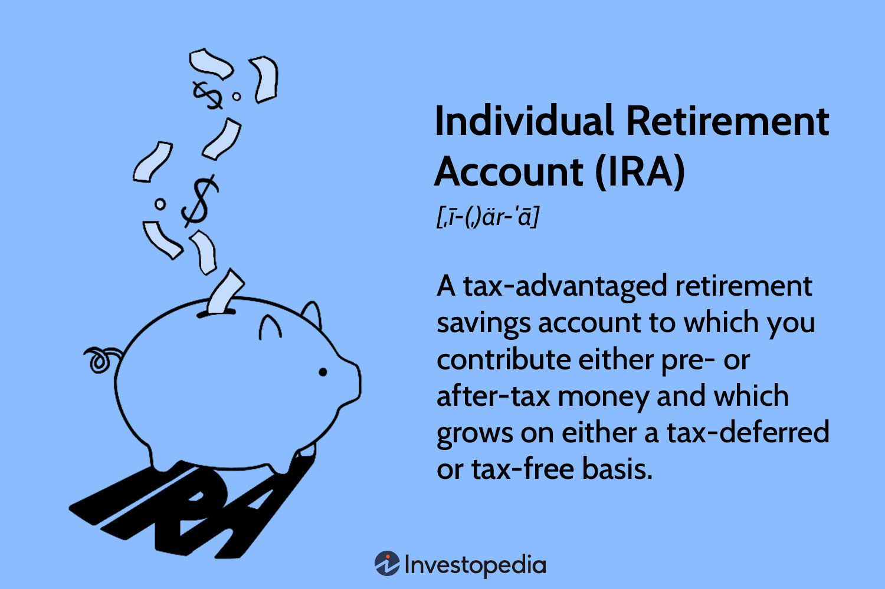

CashFlowAcademy
Home
Budgeting
Saving
Investing
Debt Management
Login
Retirement Accounts (401(k)s, IRAs, etc.)

Introduction to Retirement Accounts
Retirement accounts, such as 401(k)s and IRAs, are essential tools for individuals to save and invest for their golden years. These accounts offer tax advantages and long-term growth potential, helping individuals build a financially secure retirement. A 401(k) is a retirement plan sponsored by employers, allowing employees to contribute a portion of their pre-tax salary into the account. Some employers also offer a match, contributing additional funds on behalf of the employee. On the other hand, an Individual Retirement Account (IRA) is a personal retirement savings account that allows individuals to contribute a certain amount annually, with potential tax deductions depending on the type of IRA. Both 401(k)s and IRAs come in traditional and Roth varieties, each with different tax treatment, withdrawal rules, and contribution limits.
Advantages of Retirement Accounts
One of the key advantages of retirement accounts is the tax benefits they offer. In traditional retirement accounts like 401(k)s and traditional IRAs, contributions are made with pre-tax dollars, reducing the individual's taxable income for the year. As a result, individuals may pay lower income taxes in the present, deferring taxes until they withdraw the funds during retirement. In contrast, Roth retirement accounts like Roth 401(k)s and Roth IRAs are funded with after-tax dollars, but withdrawals during retirement are tax-free, providing tax-free income in retirement. Additionally, retirement accounts offer the potential for long-term growth through investments. Individuals can choose from a range of investment options, including stocks, bonds, mutual funds, and exchange-traded funds (ETFs), tailored to their risk tolerance and investment objectives. The power of compounding allows retirement savings to grow significantly over time, especially when individuals start saving early and consistently contribute to their accounts.
Considerations and Withdrawal Rules
While retirement accounts provide numerous benefits, they are subject to certain rules and restrictions. For example, early withdrawals from retirement accounts before age 59½ may trigger a 10% penalty in addition to income taxes, except in certain qualifying circumstances. This penalty is designed to discourage premature withdrawals and encourage individuals to save for their retirement. However, there are specific provisions, such as hardship withdrawals and qualified distributions, that may exempt individuals from penalties. Additionally, there are required minimum distribution (RMD) rules, mandating minimum withdrawals from traditional retirement accounts once the account holder reaches age 72 (for accounts opened after 2019) or age 70½ (for accounts opened before 2020), to ensure that individuals utilize their retirement savings during their retirement years. It is crucial for individuals to understand the rules and tax implications associated with their retirement accounts, as proper planning can maximize the benefits and help individuals achieve their retirement goals with financial security. Seeking advice from financial advisors or retirement planning professionals can be beneficial in navigating the complexities of retirement accounts and making informed decisions.